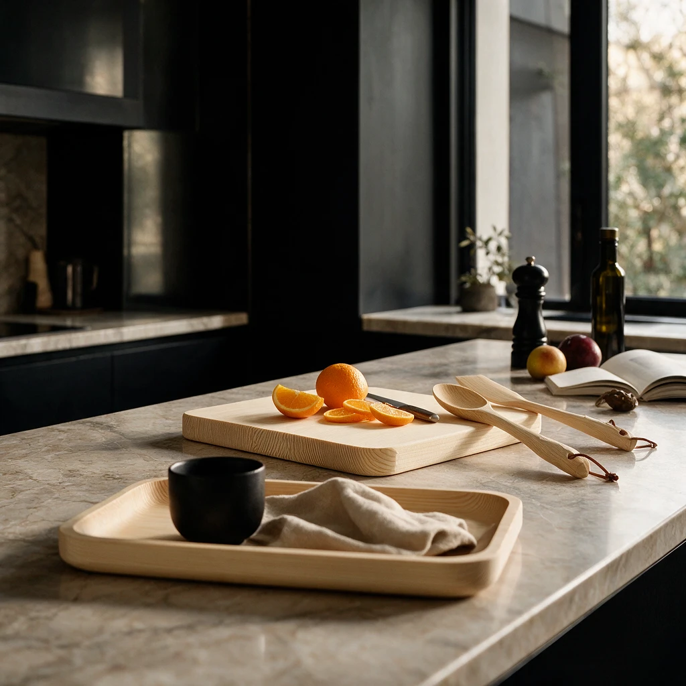
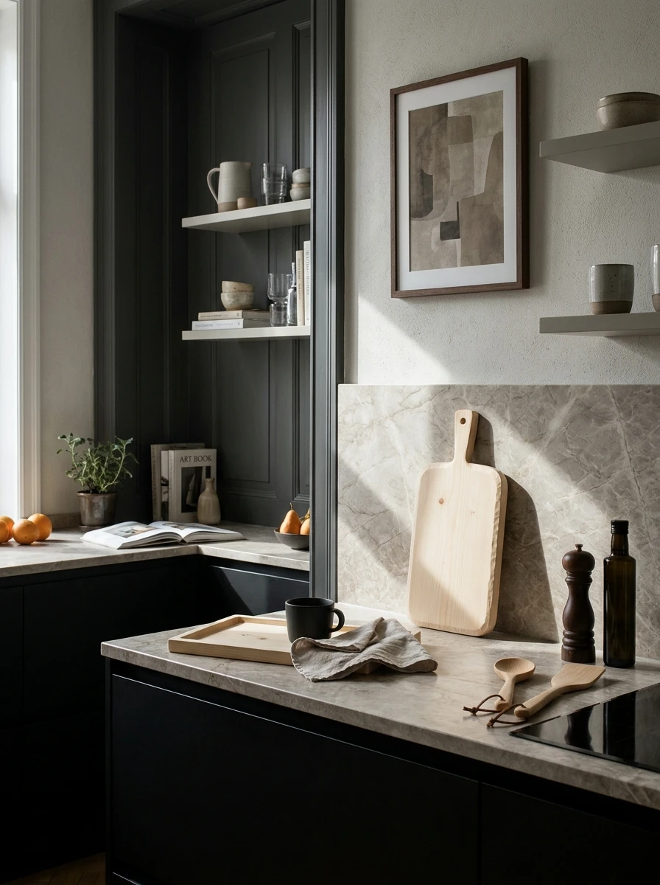
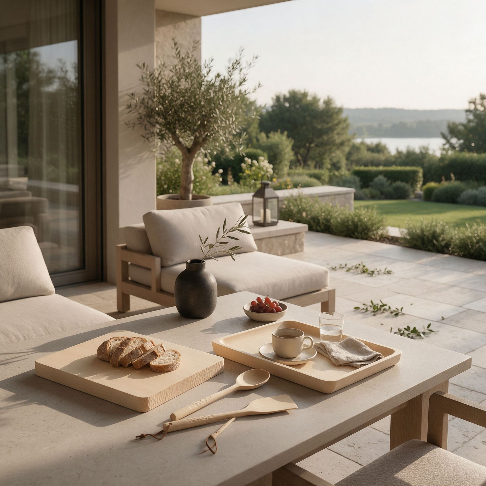
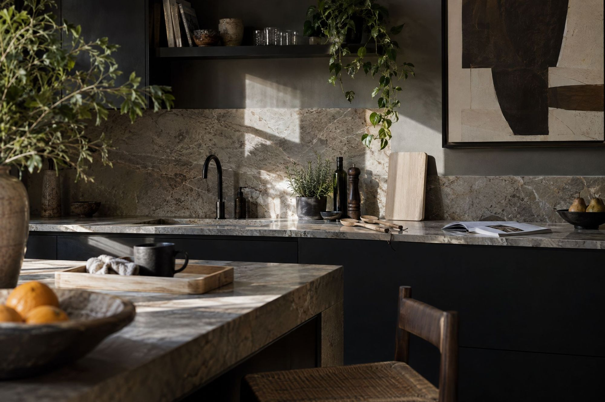

The Season
When the first snow falls, the workshop goes quiet. We take our time, let the wood rest, and finish each piece by hand before it leaves for a new home.
New Arrivals
SEE WINTER 26雪の野に立つ一本の木のように。Winter 2026 は、寒い季節を静かに支える道具を集めました。手になじむ素材と、長く使い続けられるつくりで、毎日の暮らしにそっと寄り添います。
Introduction
北の暮らしに、しずかに、ちいさく、ながく寄り添うものづくり。




The Season
When the first snow falls, the workshop goes quiet. We take our time, let the wood rest, and finish each piece by hand before it leaves for a new home.